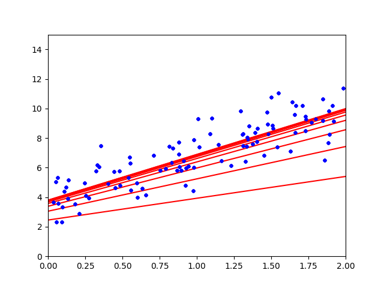

勾配降下法¶
どうやってパラメータの最適解を求めるのか？¶
前回，線形回帰（回帰分析）の章の最後で， どうやって手元にあるデータから全体を予測するのか，具体的にはどのようにしてパラメータの求めるのかが大事になる， と言いました．
ここでは，具体的にバッチ勾配降下法のやり方をお伝えします．
バッチ勾配降下法は，ランダムな初期パラメータから初めて， ちょっとずつパラメータを変化させて， 最終的に最適解（誤差MSEが最も小さくなるパラメータ）を見つける手法です．
しかしパラメータを変化させるやり方が異なるため，分けて説明します．
バッチ勾配降下法¶
バッチ勾配降下法は，一歩ずつ誤差MSEが小さくなるようパラメータを変化させていきます．
パラメータを変化させていく上で，イテレーションと学習率と言われる指標が重要になっていきます．
崖下り（山登りの逆的な何か）を例に出すと，イテレーションや学習率，誤差MSEは下のようなものになります．
イテレーション：歩数
学習率：歩幅
誤差MSE：標高
一定の歩幅，規定の歩数で崖を下っていき，標高を下げていきます． これ以上標高が下がらない谷底（誤差MSEが最小）に到達したら最適なパラメータがわかる，といった形です．
注釈
歩数があまりにも小さければ，たどり着けません．
谷底までが100mくらいだったとして，3,4歩でたどり着けというのは無理があるでしょう．
{kind=link}
歩数があまりにも大きければ，無駄に歩くことになります
100歩くらいで着きそうなのに，1000歩歩けと言われたら疲れてしまいます．
{kind=link}
歩幅があまりにも小さければ，たどり着くまでに時間がかかります．また変な窪みを谷底と勘違いします．
谷底までが100mくらいだったとして，谷底の手前に幅10mの窪みがあった時，歩幅が3mとかだと窪みを超えられず，窪みを谷底と勘違いします．
{kind=link}
歩幅があまりにも大きければ，変な窪みにハマることはなさそうですが，通り過ぎ続けてしまうでしょう．
しかし歩幅が1000m（人間じゃない）あったら，何歩歩いても谷底を通り過ぎ続けてしまうでしょう．
{kind=link}
上の例からも分かるように，バッチ勾配降下法はイテレーションと学習率をいかに良い値にするかが大事になっていきます．
実習3¶
下のコードはバッチ勾配降下法を行うためのコードです．
このコードを実行してイテレーション，学習率を変化させて，プロットの変化を確認してみてください．
import numpy as np
X = 2 * np.random.rand(100, 1)
y = 4 + 3 * X + np.random.randn(100, 1)
X_b = np.c_[np.ones((100, 1)), X]
eta = 0.1 # 学習率
n_iterations = 10 # イテレーション
m = 100 # サンプル数
theta = np.random.randn(2, 1) # 無作為な初期値
import matplotlib.pyplot as plt
for iteration in range(n_iterations):
gradients = 2/m * X_b.T.dot(X_b.dot(theta) - y)
theta = theta - eta * gradients
X_new = np.array([[0], [7]])
X_new_b = np.c_[np.ones((2, 1)), X_new] # 各インスタンスにx0 = 1 を加える
y_predict = X_new_b.dot(theta)
plt.plot(X_new, y_predict, "r-")
plt.plot(X, y, "b.")
plt.axis([0, 2, 0, 15])
print(theta)
plt.show()
イテレーション（歩数）10回程度だと，だんだん近づいて行っている様子がわかるかと思います．
{kind=link}
今回もターミナルを見てみると，以下のような表示があると思います．
$ python3 normal_equation.py
[[3.79748615]
[3.09573583]]
上の4くらいの数字が，予測線の切片を表しています． 下の3くらいの数字が，予測線の傾きを表しています． 今回は，y = 3X + 4 + error をベースに作成したので，おおよそ予測はできていると言っていいでしょう．
ここから，学習率やイテレーションを変化させて，上記で説明した問題を引き起こしてください． サンプル数に関しては，線形回帰の項目で問題を確認してもらったので，変化させなくて大丈夫です．